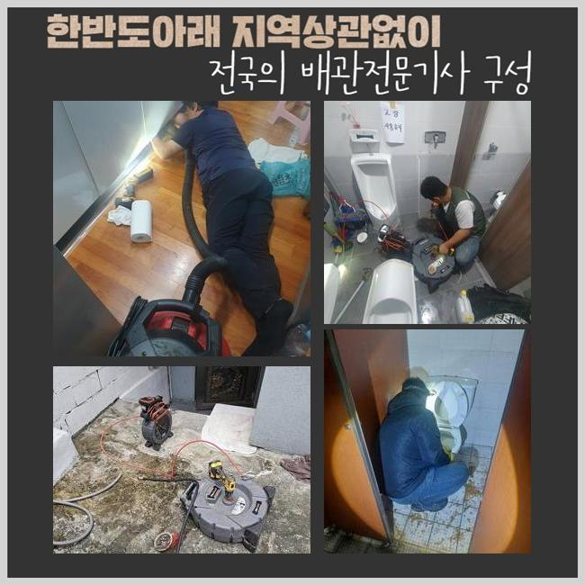
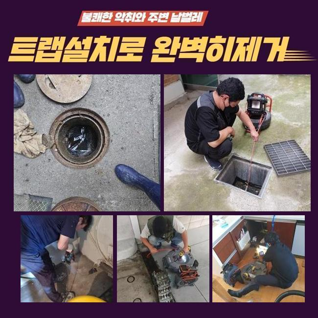
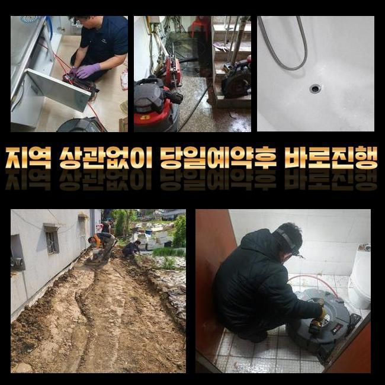
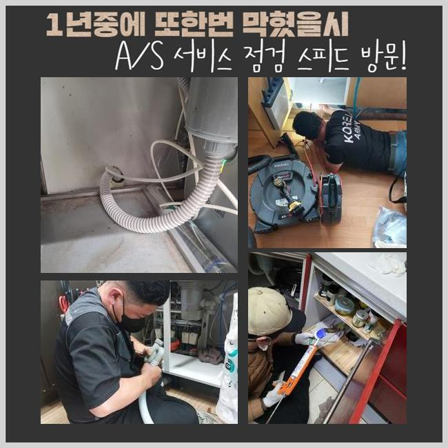

🏠 성남 성남동싱크대배수관역류 갈현동 오수맨홀청소 통수전문
성남 남동 싱크대막힘 전문 시공 후기

📋 작업 개요
- 위치: 성남 남동, 남동, 성남
- 서비스 유형: 싱크대막힘, 하수구막힘, 배관막힘, 맨홀막힘, 역류해결, 배관청소
- 작업 일시: 2025. 1. 13. 15:37
- 업체명: 하수구수사대 (010-5615-2118)
🔍 문제 상황
성남 성남동싱크대배수관역류 갈현동 오수맨홀청소 통수전문
오전에 고객님께 긴급하게 전화를 받은후에 알려주신 주소지로 달려갔습니다
사례자님께서 다급한 문제로 도움을 요청하셨고 저희 업체는 빨리 필요한 기계를 싣고서 목적지에 도착했습니다
배수관이 막혀버리면 실생황에 큰 어려움이 생기므로 이런 문제들을 가능한 신속하게 처리하는게 가장 중요합니다
현장으로 출동하여 일단 문제가 발생한 곳을 체크 했습니다
세탁기기를 사용하는 다용도실에서 발생 되었는데 탈수를 하면 잘 내려가지 못하고 역류하고있는 상황이였어요
사례자님께서는 배수관이 막히는 문제점을 해결하기 위해 이런 저런 방법들을 해봤지만 점점 문제가 심각해져서 세탁기기를 이용할 수 없게 되어버린 상황까지 왔다고 고민을 털어놓으셨어요
일반적으로 가정집에서 하수라인이 막힌 문제들을 직접 수리 해보겠다고 시중에서 팔고있는 관련 제품들을 사용해보시지만 문제의 원인이 되는 부분을 찾아 처리하실 수는 없으시겠죠

🔎 원인 분석
💡 전문가 진단: 정밀 진단 장비를 사용하여 슬러지의 고착 여부를 판명하고 타격/세척 작업을 실시했습니다.
하수설비는 세월이 흐를수록 침전물이 쌓이면서 역류 상황등이 일어나므로 명확한 이유를 찾고 그에 맞는 작업방식을 적용해야 합니다
제일 먼저 하수구의 구조와 바깥쪽 하수관 확인을 해봤습니다
배수관 막힘사고를 정확하게 판단하려면 내부확인에서 끝내는게 아니라 외부로 나있는 배수관도 살펴봐야합니다
배수구는 집에서 사용한 물등을 외부 배수관으로 흘려보내는 구조라서 막힘문제의 원인들이 내부쪽에 있는지 바깥쪽인지 점검해야 합니다
전반적으로 검사를 해보니 외부에 있는 하수로에 이물질들이 가득 쌓여 물이 잘 나오지 않고 있었어요
밖으로 이어진 하수관의 막힘사고를 해결하려면 내부쪽과 외부쪽의 하수라인을 한꺼번에 수리해요
일단 내시경장비를 활용해 배수구 안쪽을 세밀하게 관찰합니다
모니터로 배수구 안쪽에 쌓여있는 불순물이 배수라인을 완전히 막고있는 상황을 발견했어요

🔧 작업 과정
샤프트기기를 활용해 하수관에 가득한 노폐물을 처리하는 과정을 시작했어요
샤프트기계는 회전하는 힘을 이용해서 이물질들을 빠르게 제거하는 기기로 하수라인에 달라붙어 있는 단단한 노폐물을 파쇄해서 내보내는 장비예요
샤프트기는 배수라인 안쪽의 불순물을 분쇄하여 배수관을 깨끗하게 만들어줘요
배수라인의 막힘 정도가 심각한 상태라서 전문 기술진들이 오랜시간을 들여 하수관 내벽에 달라붙은 슬러지를 완벽하게 처리했습니다
머리카락과 같은 오염물질은 사용 할 때마다 하수라인에 쌓이게 되면서 오수가 빠져나가는 길목을 막아버리므로 위와 같이 노폐물이 쌓이지 않게끔 미리 예방하는 것이 좋아요
집 내부쪽의 배수관에서 작업한 침전물이 배수라인을 타고 내려가지 못하게 걸러내서 따로 처리하고 배수관을 다시 확인했어요
오늘 현장에선 단단한 기름슬러지 등의 오염물질이 배수라인을 막고 역류현상을 일으키고 있었지만 시공을 완료한후 내시경기기를 통해서 모든 하수라인이 깨끗해진걸 확인하고 마무리 지었습니다
마지막 작업을 마무리하며 물을 틀어 계속적으로 내려가는 것을 보면서 역류를 비롯한 다른 오류가 없는지 최종 확인을 했어요
배수관에서 오수가 아주 잘흘러가는 모습까지 확인한 후에 작업을 마무리 지었습니다
사례자님께서는 막힘현상 이후에 문제들이 처리되어가는 상황까지 시공에 들어가면서부터 저희들과 같이 전과정을 직접 보셨어요
저희 전문 기술진은 하수라인의 막힘 사고등을 신속정확하게 처리해드립니다
배수관이 막혀버리면 생활 속에서 크고 작은 불편함이 일어날 수도 있기때문에 저희 업체는 신속정확하게 해결하고자 언제나 준비하고 있어요
이러한 배수구 막힘 사고는 배수적인 문제뿐만 아니고 위생과 같은 상황에도 직결되므로 조속히 해결하시는게 이롭습니다


✅ 작업 완료
만약에 밑에층에 손상이 발견된다면 윗집에서 영향을 준 문제가 맞는지 파악해야하므로 전문진에게 점검을 의뢰하여 확인하시는걸 추천합니다
저희들은 효과적이고 빠른 출동으로 고객분께서 만족하시도록 해결 해드리겠습니다
하수구 문제로 상담이 필요하다 싶으시면 저희 전문가에게 전화 해주시면 꼼꼼하게 안내 해드리겠습니다
배수관의 말썽으로 곤란을 겪고 계시다면 저희 업체로 연락주세요!


⚠️ 주방 싱크대 배관 막힘 예방 수칙
- ✅ 기름기가 묻은 식기나 프라이팬은 설거지 전 키친타올로 반드시 기름때를 닦아내세요.
- ✅ 주기적으로 싱크대 개수대에 뜨거운 물을 가득 받아 한 번에 내려 배관 내부 기름을 씻어내세요.
- ✅ 배수구 거름망을 미세한 필터로 사용하시고 음식물 찌꺼기가 틈으로 새어 들지 않게 관리하세요.
- ✅ 베이킹소다와 식초를 뜨거운 물과 함께 일주일에 한 번씩 부어주면 배관 살균과 막힘 예방에 좋습니다.
💡 핵심 정리
- 확실한 장비 작업(내시경 점검 및 샤프트 스케일링)으로 원인을 뿌리 뽑습니다.
- 작업 후 1년 이내에 동일한 부위 재발 시 100% 무상 A/S 서비스를 보장합니다.
- 서울 · 경기 · 인천 전 지역에 24시간 언제든 긴급 출동할 수 있도록 항시 대기 중입니다.
❓ 자주 묻는 질문 (FAQ)
🚨 성남 남동 싱크대막힘 문제로 고민이신가요?
정확한 원인 진단과 확실한 시공으로 재발 없는 해결을 약속드립니다.
24시간 긴급 출동 | 서울 · 경기 · 인천 전지역 | 1년 내 재발 시 무상 A/S